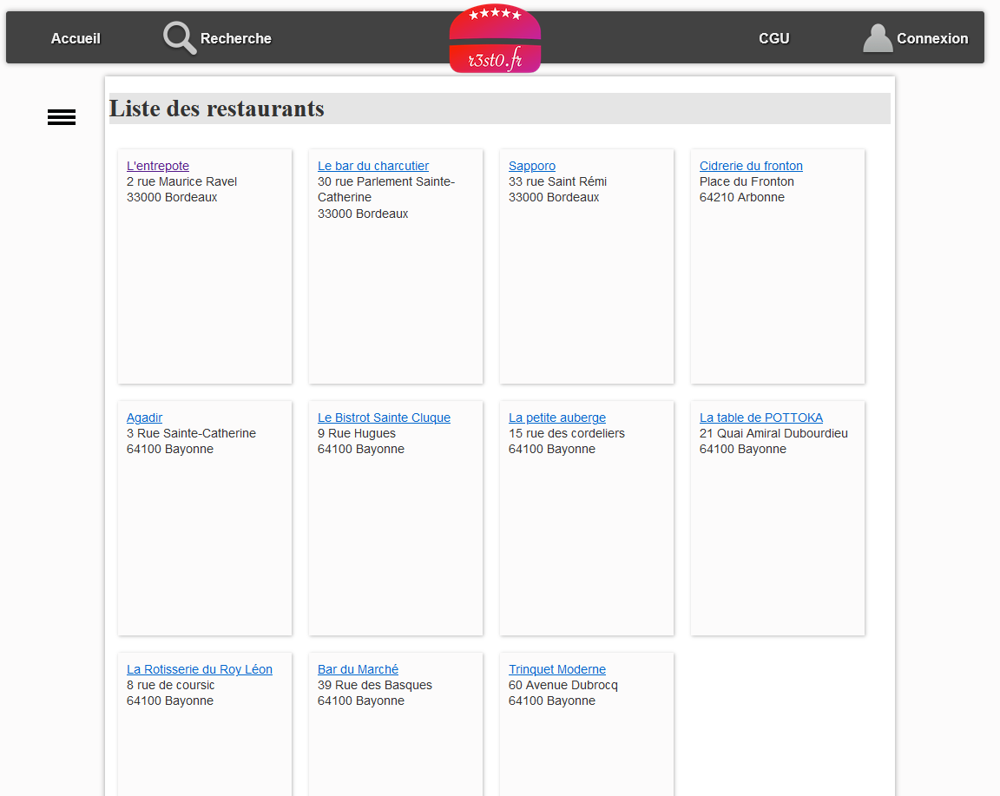

WebResto
WebResto
Contexte
Ce projet est un site web de critique de restaurant.
Son objectif est de répertorier des restaurants,
de stocker leurs caractéristiques, de recueillir l'avis des consommateurs,
et de diffuser ces information pour conseiller les vistiteurs.
Le site est en cours de développement, des corrections et des évolutions sont à mettre en place.
Technologies et outils
StarUML (logiciel de modélisation UML), HeidiSQL (outil d'administration de base de données), SQL, PHP, CSS et PHPStorm (IDE).
Missions
- Création de l'UML
- Modification de la base de données
- Correction de l'affichage de la liste et du détail des restaurants


Liste des restaurants
Correction de l'affichage
Détail d'un restaurant
Correction de l'affichage, ajout des critiques et des tags
Bilan
Ce projet MVC m'a permis de développer sur de l'existant, il faut donc s'adapter à la structure et au formalisme.
De part mes experiences, il se rapprochait beaucoup d'un projet professionnel car les missions étaient des corrections de bugs et des demandes d'évolutions.